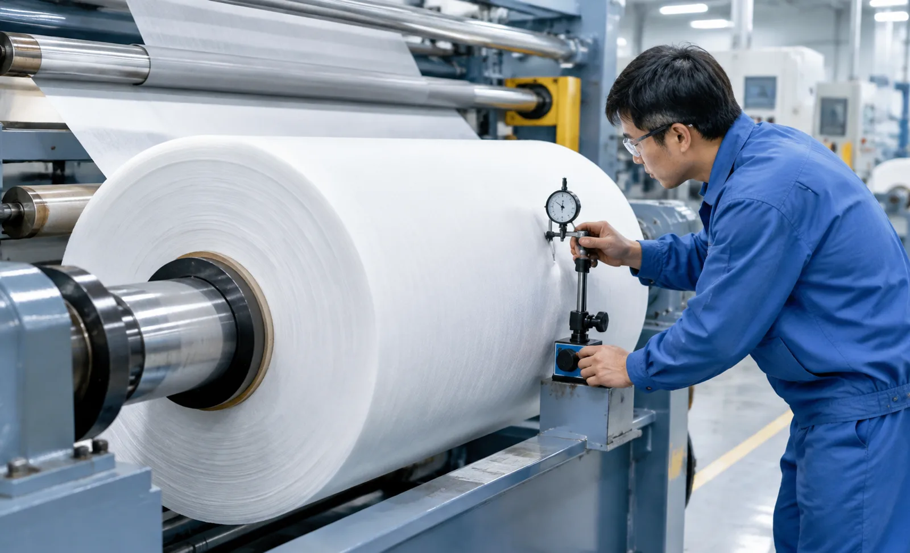
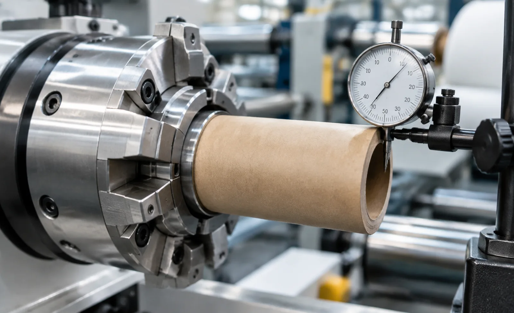

Published October 18, 2026 | By HDPTH Technical Editorial Team

Every rotating part in a converting line has a geometric truth, and the web reads it directly. When a core, shaft, chuck or roller turns about an axis that does not match its geometric centre, the effective wrap radius changes once per revolution. On the unwind that becomes a tension oscillation the controller chases and can never quite cancel, because it is a mechanical input, not noise. On the rewind it becomes a lay-on pressure pulse that prints itself into the roll structure. Because the disturbance is periodic and low in amplitude, it hides: operators see soft rolls, telescoping in a single sector, or circumferential hardness variation, and blame tension settings, material or the core supplier.
How eccentricity shows up in product and process
The signature is periodicity. Log the tension signal and count pulses: if the disturbance frequency equals the revolution rate of one specific roll, you have found your part. An out-of-round parent roll produces a radius error the dancer or load cells see as a real tension change; the closed-loop controller then corrects late and adds its own ripple. Downstream, the consequences appear where the web is most sensitive: gauge bands at a fixed angular position, wave or star defects on one side, and hardness variation the roll hardness tester maps as a periodic pattern. The faster the line and the lighter the web, the more visible the error becomes.
Where the eccentricity comes from
Buyers should look at four sources, in order of how often they are ignored. First, the cores: an egg-shaped or oversized-bore core is part of the rotating system, and no machine feature downstream can undo its geometry. Second, the chucks and the chuck-to-core interface: a chuck that grips off-centre, or a lug that seats on a deformed core end, translates core quality directly into runout. Third, the shafts and rollers themselves — machining concentricity, bearing fits, and assembly errors such as a bearing housing shimmed unevenly. Fourth, the parent roll on the unwind: even a perfect machine cannot show an unround parent roll straight. Distinguish machine-caused from material-caused runout during diagnostics, because the acceptance criteria differ.
Measuring runout: TIR, stations and reference parts
Runout is measured as total indicated runout — TIR, the full peak-to-valley reading of a dial indicator or laser sensor swept once around the rotating part. The protocol matters more than the number. Measure at both bearing journals and at the centre of the span for shafts, at the chuck seating diameter with a certified reference core, and on the roller surface at three positions across the width. Sweep at least ten revolutions at running speed, not just by hand, because bearing behaviour under load differs from static rotation. Note temperature too: some shaft and chuck designs shift when warm, so a machine that passes cold can fail after an hour at speed.

Machine design features that control eccentricity
Good geometry is bought at the design stage, not corrected at commissioning. Specify concentric machining and ground bearing seats on shafts and rollers, with stated TIR figures rather than the word “precision”. Ask for the balance grade: for rollers above roughly 300 millimetres diameter or speeds above 300 metres per minute, dynamic balancing to ISO 21940 grade G6.3 is a reasonable request, and wide, heavy rewind shafts justify G2.5. Check how each chuck centring principle works — lug, wedge or expanding disc — and whether the centring survives a deformed core end. A flexing shaft adds a deflection error on top of the geometric one. Finally, require runout figures documented per part, so acceptance compares against paper, not memory.
Roundness acceptance criteria: what to write into the contract
Like static or noise, runout is only enforceable when the method and limit are both written down. A robust acceptance clause has four elements. First, the parts in scope: unwind and rewind shafts, chucks, idler rollers, lay-on roll, and the stack-up with a reference core. Second, the method: calibrated dial indicator or laser sensor, defined stations, minimum ten revolutions at production speed, warm machine condition. Third, the limits: 0.05 millimetres TIR or better on finished shafts, chucks and rollers is a realistic machine-side target; cores and parent rolls are specified separately, typically 0.5 to 1.0 millimetre depending on diameter. Fourth, the evidence: per-part readings recorded in the FAT report with instrument and calibration data.
| Verification item | Method | Typical criterion |
|---|---|---|
| Shaft and roller radial runout, defined stations | Dial indicator or laser sensor, ≥10 revolutions at speed | ≤0.05 mm TIR per part |
| Chuck centring with reference core | TIR at core seating diameter, certified dummy core | ≤0.10 mm TIR stack-up |
| Dynamic balance grade | ISO 21940 balancing certificate per part | G6.3 (G2.5 for wide rewind shafts) |
| Warm-condition repeatability | Repeat TIR sweep after 60 minutes at speed | No shift beyond stated tolerance |
| Winding outcome correlation | Roll hardness map and visual check, reference core | No periodic gauge band or sector softness |
Runout never acts alone: it multiplies with shaft deflection, bearing wear and tension settings. Pair the TIR measurements with the winding trials in our rewind shaft deflection guide, connect vibration findings to the acceptance limits in our vibration and noise acceptance guide, and review the complete package when specifying equipment such as HDPTH high-speed slitting machines, where concentric machining, balance certificates and dial-indicator acceptance are engineered into the build.
Specifying your next slitter rewinder?
Tell HDPTH your material, width and speed. We design runout control — concentric machining, balancing certificates, chuck centring and dial-indicator acceptance — into the build, and hand over the measurement records with the documentation set.
Submit Your Project InquiryFrequently asked questions
What runout (TIR) figure is acceptable for an unwind roll or rewind shaft on a slitter rewinder?
A practical target is total indicated runout of 0.05 millimetres or less on finished shafts, chucks and rollers turning at production speed, measured at both bearing journals and at the centre of the span. Cores and parent rolls are usually specified separately, typically 0.5 to 1.0 millimetre TIR depending on diameter.
How do we tell eccentricity apart from other tension disturbances?
Eccentricity is periodic, not random. It repeats exactly once per revolution of the offending roll, so its frequency in the tension trace equals the roll speed in hertz. Log tension and check whether the disturbance scales with that roll’s speed. Random oscillation points to control tuning or web properties instead.
When is dynamic balancing actually required?
Balance grade matters once surface speed and roll mass grow. As a rule of thumb, request ISO 21940 balance grade G6.3 for rollers above roughly 300 millimetres diameter or line speeds above about 300 metres per minute, and G2.5 for wide, heavy rewind shafts. At low speeds on narrow machines, a documented static balance plus concentric machining is usually sufficient.
Can an out-of-round core ruin winding quality even on a perfectly built machine?
Yes. The core is part of the rotating system, so an egg-shaped core injects a once-per-revolution disturbance straight into the earliest wraps, where the roll structure is formed. Machine-side runout control cannot correct a poor core. Specify core roundness, diameter and crush strength with your core supplier and verify incoming cores with the same TIR method.
How is runout verified at factory acceptance without a full production roll?
Mount a calibrated dial indicator or laser runout sensor on the machine frame, zero it on a reference surface, and sweep the full circumference of each shaft, chuck and roller at running speed for at least ten revolutions. Record peak-to-valley readings at defined stations in the FAT report, then fit a dummy roll of known roundness to verify the complete rotating stack-up.